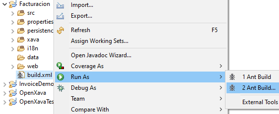
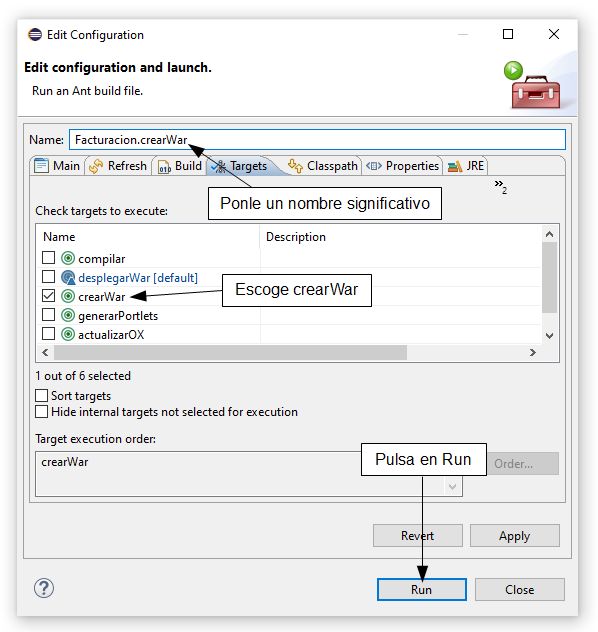

Desplegar en producción con Tomcat
Puedes desplegar tus aplicaciones OpenXava en cualquier servidor de
aplicaciones Java con soporte de Servlet 3.0 o superior. Para esta guía
vamos a usar Apache Tomcat para desplegar tu aplicación OpenXava. Tomcat
es el servidor de aplicaciones Java más usado y robusto, ideal para
entornos de producción.
Descargar e instalar Tomcat
Descarga Tomcat 9
desde Apache. OpenXava también funciona bien con Tomcat 8 y 7. Descomprime
el Tomcat en una carpeta de tu elección. Ve a la carpeta
webapps y
borra las carpetas que hay dentro:
docs, examples, host-manager,
manager and
ROOT. Son aplicaciones de ejemplo y
administración que no deberías tener en un sistema de producción.
El controlador JDBC
Has de copiar el jar del controlador JDBC en la carpeta lib de tu
Tomcat. Si todavía estás usando la base de datos HSQLDB incluida con
OpenXava, este jar sería hsqldb.jar de OpenXava/lib. Pero
si estás usando MySQL, Oracle, PostgreSQL, etc. deberías obtener el
controlador JDBC adecuado para tu base de datos y copiarlo en la carpeta lib
del Tomcat.
Crear y desplegar el WAR
Para desplegar tu aplicación en Tomcat has de crear un archivo WAR desde
tu proyecto. Para ello, pulsa con el botón derecho del ratón en el archivo
build.xml de tu proyecto y escoge Run As > Ant Build...:

Entonces quita la selección que
haya y selecciona la tarea Ant createWar:

Adicionalmente, puedes poner un
nombre mejor como Facturacion.crearWar en este caso. Pulsa en Run.
Espera a que termine la tarea Ant, después coge el archivo Facturacion.war
(o TuNombreAplicacion.war) y cópialo en la carpeta webapps
de tu Tomcat. Tu aplicación ya está desplegada.
Ejecutar Tomcat
Para
arrancar tu Tomcat, con Windows pulsa el botón de Inicio,
teclea cmd
y pulsa INTRO, entonces::
set JAVA_HOME=C:\Program Files\Java\jdk-11.0.3
cd tomcat-9.0.24\bin
startup
Con Linux/Mac:
export JAVA_HOME=/usr/lib/jvm/java-11-openjdk
cd tomcat-9.0.24/bin
./startup.sh
Por supuesto, ajusta las URLs
para tus propios directorios del Tomcat y Java.
¡Enhorabuena! Tu aplicación ya
está funcionando en producción, ya puedes usar tu navegador para
probarla.
Configurar contra la base de datos de producción
Por defecto tu aplicación va contra la misma base de datos que usas en
desarrollo, la que tienes definida en la fuente de datos en web/META-INF/context.xml
de tu proyecto. La mayoría de las veces vas a querer una base de datos
diferente para producción. Para sobreescribir la base datos usada por tu
aplicación has de definir la fuente de datos en el context.xml que
se encuentra en la carpeta conf de tu Tomcat. Para nuestro
ejemplo, deberíamos editar tomcat-9.0.24/conf/context.xml y
dejarlos de la siguiente manera:
<?xml version="1.0" encoding="UTF-8"?>
<!-- The contents of this file will be loaded for each web application -->
<Context>
<!-- Default set of monitored resources. If one of these changes, the -->
<!-- web application will be reloaded. -->
<WatchedResource>WEB-INF/web.xml</WatchedResource>
<WatchedResource>WEB-INF/tomcat-web.xml</WatchedResource>
<WatchedResource>${catalina.base}/conf/web.xml</WatchedResource>
<!-- Uncomment this to disable session persistence across Tomcat restarts -->
<!--
<Manager pathname="" />
-->
<Resource name="jdbc/FacturacionDS" auth="Container" type="javax.sql.DataSource"
maxTotal="20" maxIdle="5" maxWaitMillis="10000"
username="facturacion" password="afj30" driverClassName="org.hsqldb.jdbcDriver"
url="jdbc:hsqldb:hsql://localhost:1999"/>
</Context>
Usamos FacturacionDS como
nombre de fuente de datos, el mismo que en el context.xml incluido
en tu WAR, pero definiendo url, username y password
diferentes.